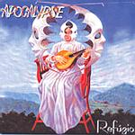

| Artist: | Apocalypse |
| Title: | Refugio |
| Label: | Musea FGBG 4460.AR |
| Length(s): | 6? minutes |
| Year(s) of release: | 2003 |
| Month of review: | [09/2003] |
| 1) | Refúgio | 5.07 |
| 2) | Cachoeira Das Águas Douradas | 9.20 |
| 3) | Viagem No Tempo | 4.28 |
| 4) | América Do Sul | 8.24 |
| 5) | Toccata | 2.06 |
| 6) | Amaz&ohat;nia | 6.35 |
| 7) | Progjazz | 3.00 |
| 8) | Liberdade | 3.21 |
| 9) | Lembrancas Eternas | 5.49 |
| 10) | III Milénio | 2.55 |
| 11) | Último Horizonte (Live In USA, Bonus) | 4.58 |
| 12) | Terra Azul (Live In USA, Bonus) | 8.04 |
Cachoeira Das Águas Douradas opens with cheesy ELPish keyboards. The organ is again quite important here, the up-beatness of the music continues the ELPness. Some of the melodies are a bit too frolic for my tastes, some of the guitar parts are quite strong though, although they continue to border on accessibility. The vocals are sung in harmony and on the sweet side. Later the vocals go a bit deeper and the melody changes. As you might expect there are some tempo changes and melodic ones at well, this is symphonic rock right? Although I am not that familiar with their older music, it does seem to me that the Marillion influences have lessened and the classical and symphonic influences have increased. Comparisons can now be made with Cast, although the vocals are different and the organ is a bit more dominant here giving more of an ELP feel. Compositonally, the bands do not seem that different. The conclusion shows that the vocalist could easily start singing in any metal band.
Viagem No Tempo opens more as an acoustic track, with somewhat dreamy vocals, the vocals have the tendency to not lie on top of the music, but more integrated into the whole of the sound. The vocal melodies are quite alright, the composition also sounds somewhat less arbitrary than the previous one. Halfway we get another quirky intermezzo though, before we continue with dominant keyboard passages. Often I hear echoes of Queen in the music, Queen at their most symphonic of course. Often this comes from the vocal harmonies, but sometimes the music itself. The harpsichord plus organ conclusion is quite bombastic.
América Do Sul is a happy up-tempo neo-progressive track, but with the organ. All in all a bit too accessible. After two minutes of this the music dies down a bit for whispered vocals and soft keyboards. For the remainder the song contains ingredients mentioned earlier. Toccata is the first instrumental, and not very long at that. The sound seems a bit fuller here, as if it was recorded differently. Fast runs of keyboards and sharp guitar lines and of course a somewhat classical structure. However, they do have that tendency to break into something extremely frolic halfway, not a very good idea in my opinion.
Next up is Amaz&ohat;nia, a slow symphonic track with a marimba and percussion intermezzo with scat vocals. The sound is more distinctive on this one, which is a good thing. The vocals strongly intertwine, the vocal lines are good and varied. The conclusion is both optimistic and bombastic.
Progjazz opens in jazzy fashion, not so surprising in view of the title. It would have been a likely candidate for being an instrumental, but that is not the case. Late nite jazz with Brazilian vocals and dancing keyboards. A strange combination. Liberdade opens with very catchy keyboards, almost in italo style. But then the song turns out to be quite an aggressive rocking affair. Quite a surprise and it works out well too.
Lembrancas Eternas is the total antidote to Liberdade with its piano and portentous vocals. The vocals are sweet and melodious. Then the music becomes a bit more powerful, and more in the line of Cast again. Vocal melodies are memorable again, but the instrumental side is a bit too unoriginal. The final part is very good, up-tempo sweeping synths and such. III Milénio is the album closer, a short instrumental high on organ. Quite a bit of groove on this one at times, but mainly it is in ELP style.
The Musea version also has two bonus tracks, Último Horizonte (Live In USA, bonus) and Terra Azul (Live in USA, bonus), which I assume are not present already on the double live album by the band. A difference with the songs on the album is that the music comes out heavier and fuller, and is also a bit more neo-progressive in style.